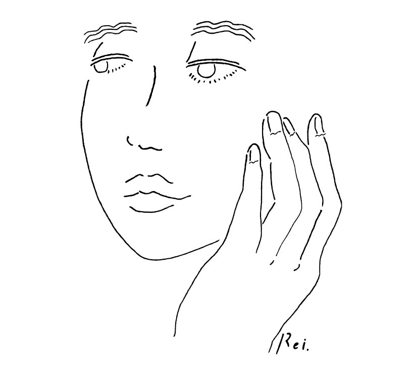

Profile
Karoline ＜かろりね＞
ブラジル出身
- 2003 来日
- 2007 メイクアップアーチスト学院卒業
フリーアシスタントとして活動 - 2008 ヘアー＆メイクアップアーチスト 宮澤結弦氏に師事
- 2010 2年間のアシスタントを経てフリーランスHMとして活動
Works 主なスポンサー（順不同・敬称略）
・SHISEIDO ・ETVOS ・FANCL ・MAYBELLINE ・docomo ・NIKON ・Peach John ・Coca-Cola ・KAO ・KANEBO ・NIVEA
・サントリー ・森永 ・Panasonic ・ANA ・KOWA ・Asahi Beverage ・OMRON ・サニクリーン ・BANDAI ・東洋水産 ・SONY
・airweave ・CANON ・ヴァンガード ・日本ユニシス ・日清製粉グループ
・SEIYU ・フジテレビ ・ハウス食品グループ ・BlackBerry ・KFC
・日本マクドナルド ・三菱電機 ・TOYOTA ・NTT ・SUZUKI(SWIFT) ・小林製薬
・Glicoカプリコ ・三愛水着 ほか
広告を中心に、TV、ランウェイ、雑誌、ファッションEC、アーティストPV撮影、オペラなどの舞台、イメージ構築、ヘアメイクレクチャー等、多岐に渡り活動。
現在に至る。